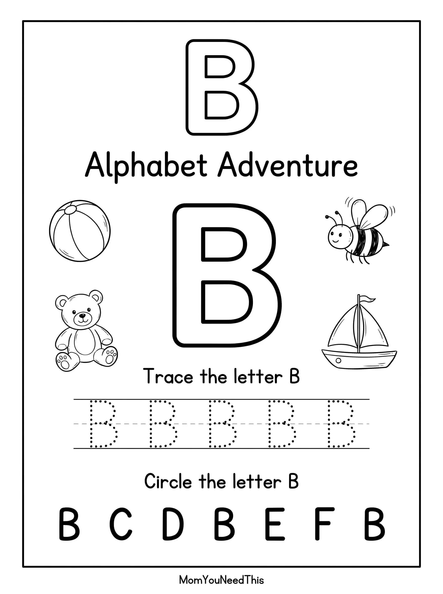

Free Letter B Coloring Page B is for Bear 🐻
This free printable letter b coloring page gives toddlers and preschoolers a fun, no-prep way to meet the letter that starts bear, ball and banana. A big, bold B — a straight line with two bumps — is paired with a friendly bear, so children color the letter's shape while they hear its popping sound. Just download, print, and let them color.
Quick Answer
B is for bear on this letter B coloring page: toddlers and preschoolers color a big, bold letter B — a straight line with two bumps — beside a friendly bear. As they color, they hear the letter's popping sound and start recognizing its shape. One free PDF — download, print and color, no signup.
At a Glance
- Ages: Toddlers and preschoolers
- Activity: Coloring a big, bold letter B with a friendly bear
- Skills: Letter B recognition and coloring
- Format: Printable coloring page (PDF)
- Cost: Free, no signup
🔤 All About The Letter B
B is for bear — the picture on this page — and the letter itself is worth a close look while the crayons are out. Capital B is a straight line with two bumps; its small partner b keeps the line and just one bump. Coloring inside those bumps is real shape practice.
The b sound is a pop: the lips press together and burst open — b. It cannot be stretched like s or f, so say it in quick pops while you color: b-b-bear. More b words to chat about over the crayons: ball, banana, bus, bed and bird — and listen for b at the end of tub and web, too.
When the page is done, the learning does not have to stop. Hunt for the letter b together in a storybook — it starts words on almost every page — and pop its sound each time one turns up.
🔤 How To Use This Printable
- Download and print the coloring page on letter-size paper — print a few extras so there is no fighting over favorites, and so a second round is ready when the first B is finished.
- Set out crayons, markers, or colored pencils and let your child choose their colors. While the big B fills in, count its two bumps together — that shape is what makes it a B.
- Color together or side by side, chatting about the picture as it comes to life: a bear begins with the same pop as ball and banana. Pop the sound each time the bear gets a new patch of color.
- Show off the masterpiece on the fridge or in a learning binder to celebrate the effort — a B on display keeps teaching every time your child walks past it.

🎨 Download Your Letter B Coloring Page
A coloring activity built around the letter B: color the big letter and its bear, say b-b-bear together, and start hearing the pop that begins bus, bed and bird too.
⬇️ Download Free Coloring Page 🖨️ Print(opens in new tab)
🎁 Free printable for toddlers & preschoolers
What Your Child Practices
📚 Continue The Alphabet Adventure
Discover more free alphabet coloring pages and activities for your little learner.
⭐ Explore All LettersMore Free Toddler Resources
Discover potty training tools, learning activities, coloring pages, and more free resources to make learning fun.
🎁 View Free Resources❓ Letter B Coloring Pages FAQ
Is this letter b coloring pages printable really free?
Yes — this letter b coloring page is 100% free to download and print at home. No signup and no payment needed. Just tap the download button and print as many copies as you like — Bs reward repetition.
What ages is this printable best for?
It is made for toddlers and preschoolers. Little ones can enjoy it with a grown-up’s help, while older preschoolers can work on it more independently.
What should we color with?
Crayons, washable markers, or colored pencils all work great. For young toddlers, chunky crayons are the easiest to grip — and for this page, try coloring the letter's two bumps in two different colors to make the B shape stand out.
🔗 More Free Printables You’ll Love
- 🎨 Free Letter C Coloring PagesFree printable letter c coloring pages for little learners.
- 🔊 Free Lowercase Letter B Sound PracticeFree printable lowercase letter b sound practice for little learners.
- ✏️ Free Letter B Formation PracticeFree printable letter b formation practice for little learners.
- 🖼️ Free Letter B Picture SortFree printable letter b picture sort for little learners.